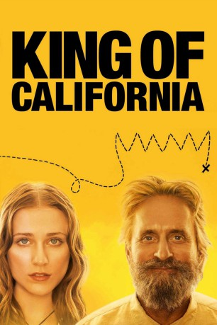

#4466 King of California
 
 IMDB-Wertung: 6.7 / 10
IMDB-Wertung: 6.7 / 10  Tomatometer: 63
Tomatometer: 63  Metascore: 0
Metascore: 0 
Die verantwortungsbewusste 16-jährige Miranda hat es in ihrem Leben nicht leicht. Von der eigenen Mutter verlassen, bricht sie frühzeitig die Schule ab, um sich mit einem Aushilfsjob in einem Schnellrestaurant über Wasser halten zu können. In dieser Situation wird ihr geistig verwirrter und mittelloser Vater Charlie nach zweijährigem Aufenthalt in einer psychiatrischen Anstalt entlassen, der jetzt zusätzlich auch noch Mirandas Leben mit seinen verwunderlichen und anscheinend völlig verrückten Ideen auf den Kopf stellt.
Jahr: 2007
Dauer: 92 Minuten
FSK: 12
Land: USA Studio: First Look InternationalTonspuren: DTS - ,
Untertitel: Deutsch,
Auflösung: 1080p (1920x1080) Größe: 7761 MB
Genre: Drama, Komödie
Regisseur: Mike Cahill
Drehbuch: Lloyd Alexander
Soundtrack:
Darsteller:
 Michael Douglas als Charlie
Michael Douglas als Charlie Evan Rachel Wood als Miranda
Evan Rachel Wood als Miranda- Willis Burks II als Pepper
- Laura Kachergus als Rita
- Paul Lieber als Doug
 Kathleen Wilhoite als Kelly
Kathleen Wilhoite als Kelly- Anne L. Nathan als Applebee's Manager
- Arthur Santiago als McDonald's Manager
 Ashley Greene als McDonald's Customer
Ashley Greene als McDonald's Customer- Anna Khaja als Officer Contreras
 Will Rothhaar als Security Guard
Will Rothhaar als Security Guard- Greg Davis Jr. als Joseph
- Jeanie Hackett als Teacher
 Mousa Kraish als Bruce
Mousa Kraish als Bruce Max Grodénchik als Leonid
Max Grodénchik als Leonid Gerald Emerick als Sheriff's Deputy
Gerald Emerick als Sheriff's Deputy- David J. O'Donnell als Firefighter
 Chic Daniel als Older Cop
Chic Daniel als Older Cop- Angel Oquendo als Younger Cop
 Ho-Kwan Tse als Chinese Man
Ho-Kwan Tse als Chinese Man- Allisyn Ashley Arm als Miranda - Age 9
- Victor J. Ho als Chinese Refugee #3 , uncredited
- Branden Weslee Kong als Chinese Refugee #4 , uncredited
- Tarri Markel als Costco Shopper , uncredited
- Jason David McFadden als Fast Food Patron , uncredited
- Ian Hopps als Boy
 Annie O'Donnell als Greeter
Annie O'Donnell als Greeter- Jason Auer als Costco Employee
- Gary Paul als Cop at Excavation
- Joyce Kirkconnell als Sexy Girl , uncredited
- Max Lee als Chinese Refugee #5 , uncredited
Datei: X:\2007(G-M)\King of California (2007, FSK12, 1920x1080).mkv seit 22.09.2016
Festplatte: HD 2007(A-Z)-2008(A-F)
 Es gibt insgesamt 64 Filme in der Gruppe '2007(G-M)'
Es gibt insgesamt 64 Filme in der Gruppe '2007(G-M)'